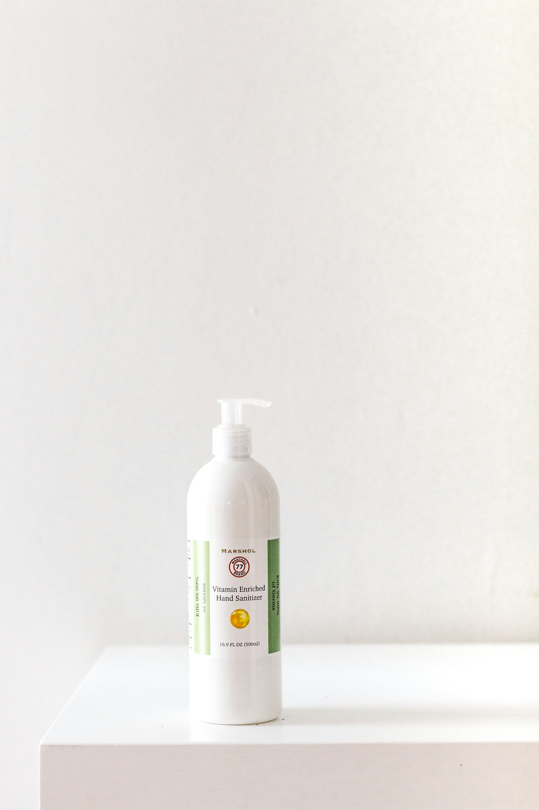

Know the role. Question the promise.
A useful ingredient story explains function, formula context and limits—without turning a label into a miracle claim.
Clear enough to be useful.
We connect products to highlighted ingredient associations, not invented full INCI lists. Before launch, replace concept information with verified supplier or manufacturer documentation.
One familiar ingredient never tells the whole story. Vehicle, stability, packaging, pH, supporting ingredients and individual use all matter.
Explore ten familiar ingredients
Think in roles, not trends
Humectant + emollient
Water-binding ingredients and softening lipids often complement one another in a complete hydration routine.
Focused active + simple base
When adding an exfoliating or tone-focused product, keep cleanser and moisturizer straightforward.
Antioxidant + sunscreen
Antioxidant formulas may complement—never replace—properly tested broad-spectrum sunscreen.

Order offers clues, not conclusions.
Ingredients are generally listed by predominance until low-concentration exceptions and colorants, but a list cannot reveal every processing choice, delivery system or performance detail.
- Look for a complete list on final packaging.
- Check use directions and precautions.
- Do not infer exact percentages unless the manufacturer confirms them.
- Patch test when appropriate for you.
The supporting cast matters
Texture
Gels, lotions, creams and balms change how a formula feels and layers.
Stability
Packaging and environment can protect ingredients sensitive to air, light or heat.
Tolerance
The same ingredient may feel different across formulas and people.
Use pattern
Frequency, amount and other products influence the overall routine.
Discover matching products
Use the shop ingredient filter to see products whose editable concept data highlights a selected ingredient. Always replace these associations with verified final formula information.
Ingredient questions?
Ask about product roles, routine order and texture preferences. For persistent reactions or medical concerns, consult a qualified healthcare professional.
Start an enquiryNo. Source alone does not determine tolerance, safety or suitability.
Not reliably. The list gives limited ordering information, not a complete percentage breakdown.